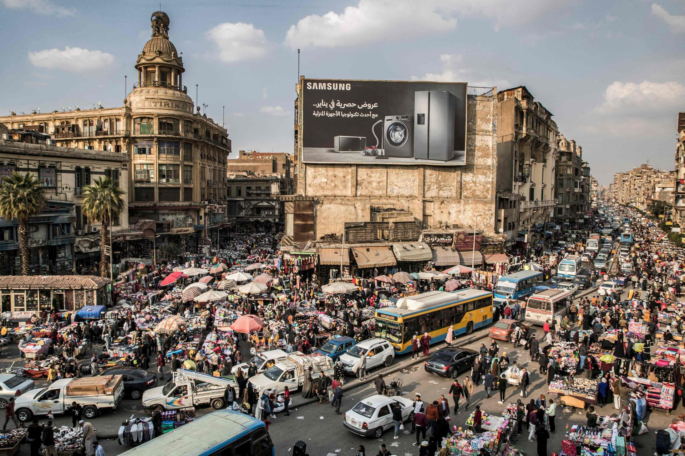

Top 5 Most Populated African Cities
- Lagos
- Population : 9 million
- Country : Nigeria
- Kinshasa
- Population : 7.8 million
- Country : R.D.Congo
- Cairo
- Population : 7.7 million
- Country : Egypt
- Alexandria
- Population : 3.8 million
- Country : Egypt
- Abidjan
- Population : 3.6 million
- Country : Ivory Cost
 |
|
The city has been described as the cultural, financial, and entertainment capital of Africa, and is a significant influence on commerce, entertainment, technology, education, politics, tourism, art, and fashion. Lagos is also among the top ten of the world's fastest-growing cities and urban areas. The megacity has the fourth-highest GDP in Africa and houses one of the largest and busiest seaports on the continent. The Lagos metropolitan area is a major educational and cultural centre in Sub Saharan Africa.Due to the large urban population and port traffic volumes, Lagos is classified as a Medium-Port Megacity.
|
|
It is Africa's third-largest metropolitan area and the leading economic, political, and cultural center of the DRC. Kinshasa houses several industries, including manufacturing,elecommunications, banking, and entertainment.The city also hosts some of DRC's significant institutional buildings, such as the Palais du Peuple, Palais de la Nation, Court of Cassation, Constitutional Court, Cité de l'Union Africaine, Palais de Marbre, Stade des Martyrs, Immeuble du Gouvernement, and multiple federal departments and agencies.
|  |
|
Cairo is by far the largest city in Egypt. An additional 9.5 million inhabitants live close to the city. Cairo, like many other megacities, suffers from high levels of pollution and traffic. The Cairo Metro, opened in 1987, is the oldest metro system in Africa, and ranks amongst the fifteen busiest in the world,with over 1 billion annual passenger rides. The economy of Cairo was ranked first in the Middle East in 2005, and 43rd globally on Foreign Policy's 2010 Global Cities Index.
|
|
Alexandria was best known for the Lighthouse of Alexandria (Pharos), one of the Seven Wonders of the Ancient World; its Great Library, the largest in the ancient world; and the Catacombs of Kom El Shoqafa, one of the Seven Wonders of the Middle Ages. Alexandria was the intellectual and cultural centre of the ancient Mediterranean for much of the Hellenistic age and late antiquity. It was at one time the largest city in the ancient world before being eventually overtaken by Rome.
|
|
Abidjan is the largest city and the economic capital of the Ivory Coast. The city expanded quickly after the construction of a new wharf in 1931, followed by its designation as the capital city of the then-French colony in 1933. The completion of the Vridi Canal in 1951 enabled Abidjan to become an important sea port. Abidjan remained the capital of the Ivory Coast after its independence from France in 1960. In 1983, the city of Yamoussoukro was designated as the official political capital of Ivory Coast.